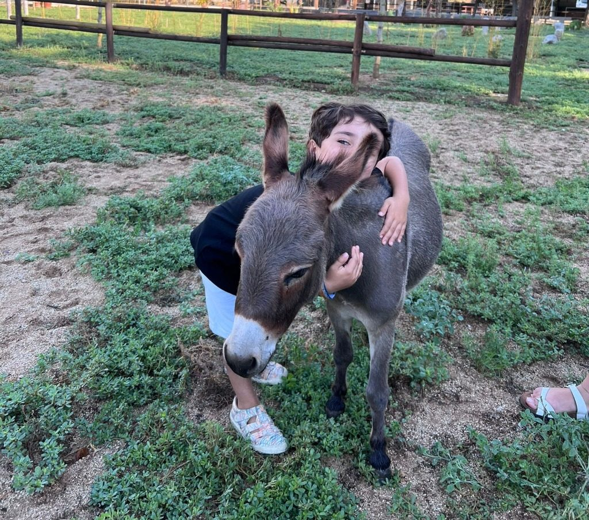
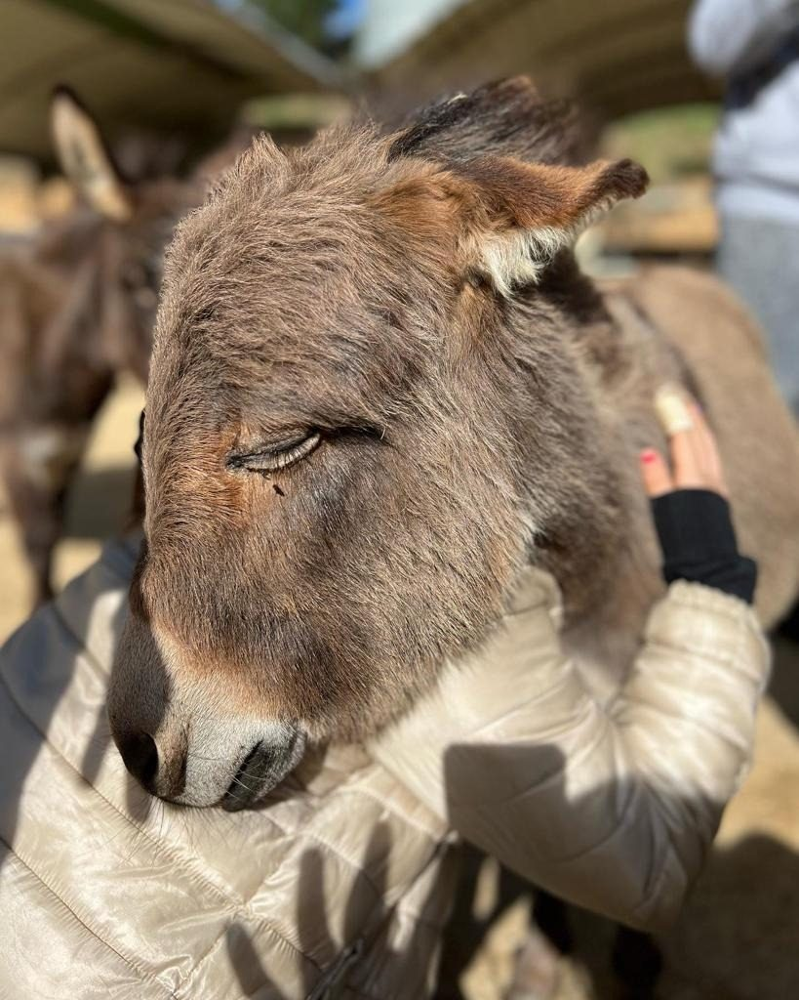

Can Ferrer · Arenys de Munt
Entdecken Sie die therapeutische Kraft des Miniatur-Esels: ein Erlebnis zur Stressreduzierung und tiefen emotionalen Verbindung in einer Umgebung absoluter Ruhe.
"Auf der Finca Can Ferrer bieten wir tiergestützte Therapien mit Miniatur-Eseln an, die auf das Wohlbefinden von Mensch und Tier ausgerichtet sind. Das gemächliche Tempo und die edle Natur unserer Exemplare ermöglichen eine Umgebung absoluter Ruhe."
Individuelle Betreuung mit Fokus auf spezifische emotionale Prozesse und Angstabbau.
Kollektive Dynamik, die auf empathische Verbindung und Gruppenkohäsion in einer natürlichen Umgebung ausgerichtet ist.
Ideal für Gruppen mit besonderen Bedürfnissen.

Häufige Fragen
Für alle, die Stress oder Angst abbauen möchten, sowie für Gruppen und Einrichtungen, auch für Menschen mit besonderen Bedürfnissen.
Beides: Einzelsitzungen mit persönlicher Betreuung und Gruppenaktivitäten, die Verbindung und Zusammenhalt fördern.
Jede Sitzung wird auf die Person oder Gruppe abgestimmt. Schreiben Sie uns, und wir senden Ihnen ein unverbindliches Angebot.
Ja. Der Zugang ist rollstuhlgerecht, und Kinderwagen sind willkommen.
Wir vereinbaren gemeinsam einen neuen Termin, ohne zusätzliche Kosten. Der Betrag wird nicht erstattet, aber Ihr Besuch verfällt nicht.
Sie können direkt neben der Finca parken, an der Carretera de Lourdes (C/ Subirans), Arenys de Munt.
Über unsere Reservierungsseite, per WhatsApp unter +34 648 911 106 oder per E-Mail an elpetitrefugiadm@gmail.com.
Besuchen Sie uns
Carretera de Lourdes (C/ Subirans) · Arenys de Munt, Barcelona
Jetzt reservierenPreise ansehen